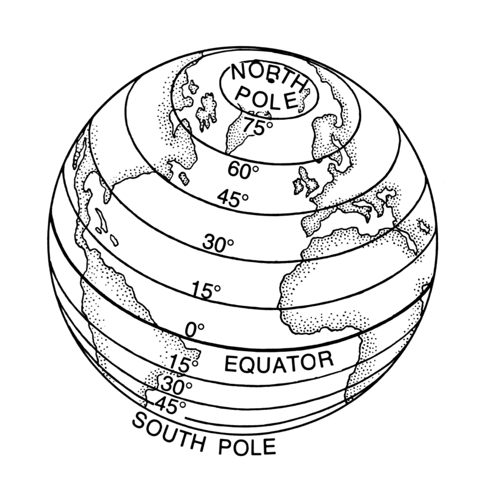
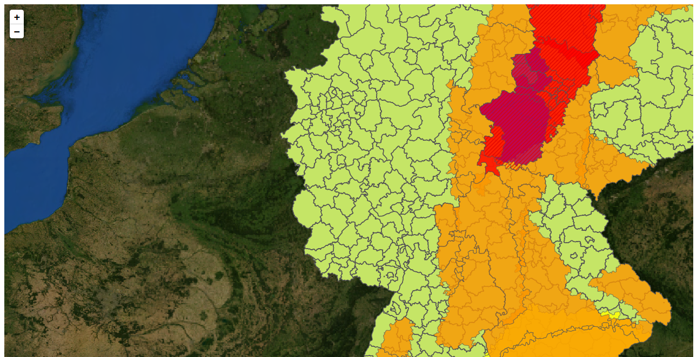
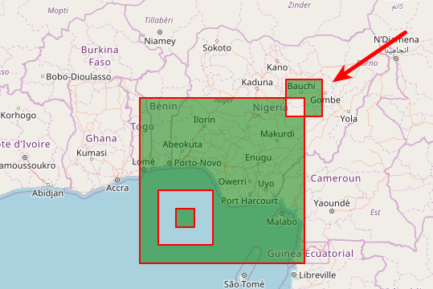
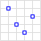
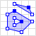
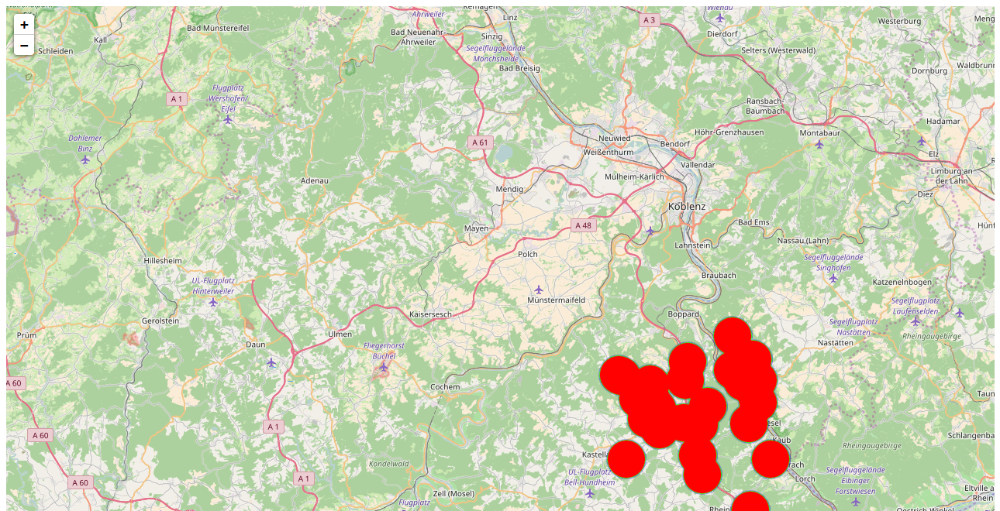
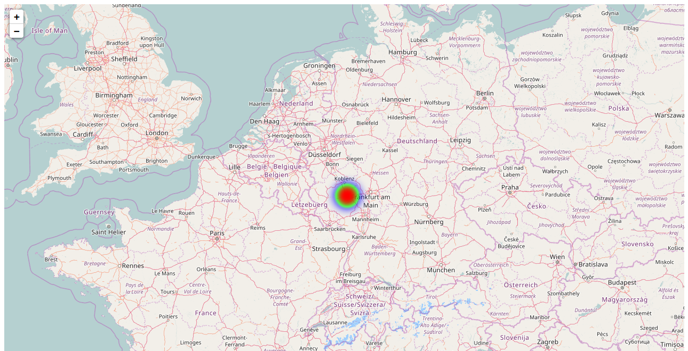

|
Guten Morgen |
- Wer bin ich?
- Was ist Leaflet?
- Was solltest du mitbringen?
- Was machen wir konkret in den nächsten 40 Minuten?
Teil 1
10:05In diesem Teil werden wir ...
- Karte erstelle
- Geografische Koordinaten
- Kartenkacheln
- Georeferenzierte Bilder
Grundgerüst
|
JavaScript und CSS
|
Container mit ID und Höhe
|
Das Karten-Objekt
|
Geografische Koordinaten
|  |

|
Schreibweise von geografischen Koordinaten
- Sexagesimalsystem: 47°25′16″N, 10°59′7″O
Dezimalsystem: 47.4211, 10.9852 - Reihenfolge
47.4211, 10.9852 oder 10.9852, 47.4211
Karten-Layer
|
Zoomstufe 1; Kachelanzahl: 4
Kachelbreite 20.019 km; 1 Pixel entspricht 78 km

|
Zoomstufe 0; Kachelanzahl: 1
Kachelbreite 40.038 km; 1 Pixel entspricht 156 km

|
| ZoomStufe | Kachelanzahl | Die Kachelbreite entspricht | Ein Pixel entspricht |
|---|---|---|---|
| 0 | 1 | 40.038 km | 156 km |
| 1 | 4 | 20.019 km | 78 km |
| .. | .. | .. | .. |
| 18 | 69 Mrd. | 153 m | 0,6 m |
| 19 | 275 Mrd. | 76 m | 0,3 m |
http://{s}.tile.osm.org/{z}/{x}/{y}.png

|
||
|
Weitere Anbieter: http://wiki.openstreetmap.org/wiki/Tiles | ||
Foto oder Rastergrafik als Karte
<!DOCTYPE HTML>
<html>
<head>
<title>Eine OSM Karte mit Leaflet</title>
<link rel="stylesheet" href="../leaflet/leaflet.css" />
<script src="../leaflet/leaflet.js"></script>
</head>
<body>
<div style="height: 700px;" id="mapid"></div>
<script>
var mymap = L.map('mapid').setView([50.27264, 7.26469], 7);
L.tileLayer('http://{s}.tile.osm.org/{z}/{x}/{y}.png').addTo(mymap);
var dwd = L.tileLayer.wms("https://maps.dwd.de/geoserver/dwd/wms", {
format: 'image/png',
transparent: true,
layers:'dwd:Warngebiete_Kreise',
attribution: "Deutscher Wetterdienst"
}).addTo(mymap);
</script>
</body>
</html>
Erinnert ihr euch an den 27. Juli 2017?
In diesem Teil haben wir ...
- Als erstes haben wir mit 5 Zeilen Code eine Karte erstellt
- Wir haben uns geografische Koordinaten genauer angesehen
- und wir wissen nun wie Karten erstellt werden.
Teil 2
10:15In diesem Teil werden wir ...
- die verschiedenen Leaflet-Objekt voneinander abgrenzen.
Ein Punkt
|
Ein Marker
|
Eine Polyline
|
Ein Polygon
|
Rectangle
|
Circle
|
Mehrere Polylines auf einem Layer
|

|
|

|
|
|  |
|
Eine LayerGroup
|
Ein FeatureGroup
|
In diesem Teil haben wir ...
- die wichtigsten Leaflet-Objekt voneinander abgegrenzt.
Teil 3
10:20In diesem Teil werden wir ...
- GeoJSON allgemein
- GeoJSON Objekte
- GeoJSON in Leaflet
Wurzeln von GeoJSON
XML
<joomlers>
<number>1721</number>
<vorname>Astrid Günther</vorname>
</joomlers>
„joomlers“: {
„number“: „1721“,
„vorname“: „Astrid Günther“
},
Position - Koordinate - [Länge, Breite, Höhe]
{ "type": "Point",
"coordinates": [30, 10]
}
Point | Multipoint

|
|
|  |
|
LineStrings | MultiLineString

|
|

|
|
Polygone

|
|

|
|
Multipolygon

|
|
|  |
|
Feature
{
"type": "Feature",
"geometry": {
"type": "Polygon",
"coordinates": [[30, 20], [45, 40], [10, 40], [30, 20]]
},
"properties": {
"prop0": "value0",
"prop1": {"this": "that"},
"prop2": true,
"prop3": null,
"prop4": ["wert1", "wert2", "wert3"],
"prop5": 0.0
}
}
FeatureCollection
{
"type": "FeatureCollection",
"features": [
{
"type": "Feature",
"geometry": {
"type": "Point",
"coordinates": [0, 0]
},
"properties": {
"name": "Der Name des Features"
}
}
]
}
Grenzen von GeoJSON
- Komprimierung
- Datentypen
- Pop-up Fenster
- Kreise und Kurven
- Eigenschaften für Positionen
GeoJSON in Leaflet - Ein Feature
|
toGeoJSON() und addData()
|
Style
|
Ereignisse
|
onEachFeature()
|
In diesem Teil haben wir ...
- GeoJSON allgemein
- GeoJSON Objekte
- GeoJSON in Leaflet
Teil 4
10:30In diesem Teil werden wir ...
- ... mit den Daten auf der Karte Fragen beantworten.
- ... Heatmaps
- ... Choroplethenkarte
Dichte

Leaflet.heat
|
|

blur: 1 |

blur: 40 |

maxZoom: 13 |

maxZoom: 6 |
Die Methoden eines Leaflet.heat Layers
|
Intensitätspunkte bei einem maximalen Wert von 100

Interaktive Heatmaps
|
Animierte Heatmaps
|
Choroplethenkarten
Datenquelle: opendatalab.de
|
Landkreise in Rheinland-Pfalz und deren Bevölkerung
|
In diesem Teil haben wir ...
- ... mit den Daten auf der Karte Fragen beantworten.
- ... Heatmaps
- ... Choroplethenkarte
Teil 5
10:35In diesem Teil werden wir ...
- Benutzerdefinierten Marker
- Vererbung
- Plugins
Benutzerdefinierter Marker
|
Benutzerdefinierter Marker - Icon positionieren
|
Benutzerdefinierter Marker - Vererbung
|
Das Plugin BeautifyMarker
|
Marker Clustern
|
Animierte Marker - bouncemarker.js
|
Animierte Marker - AnimatedMarker.js
|
Plugins kombinieren
|
Leaflet Data Visualization Framework (DVF)
|
In diesem Teil haben wir ...
- Benutzerdefinierten Marker
- Vererbung
- Plugins
Teil 6
10:40In diesem Teil werden wir ...
- ... ESRI (Environmental Systems Research Institute)
- ... Shapefile
- ... ESRI Webservices
Shapefiles
Ein Shapefile ist keine einzelne Datei..shp speichert Geometriedaten.
.dbf speichert Eigenschaften.
.shx verknüpft Geometriedaten mit Eigenschaften.
Shapefiles 1
Schienennetz der Deutschen Bahn Verwaltungsgrenzen Rheinland Pfalz Verwaltungsgrenzen Deutschland bei ESRI selbst
|
Shapefiles 2
|
Shapefiles 3
|
ESRI Webservices - Geocoding
Geocoding.geosearch()
|
Geocoding.geocode().text(address).run()
...html?a=56751 Gering
|
Geocoding.reverseGeocode()
|
ESRI Webservice - L.esri.dynamicMapLayer
https://geoportal.stadt-koeln.de/arcgis/
|
ESRI Webservices - FeatureServer
http://services.arcgis.com
|
ESRI Webservice - L.esri.featureLayer
|
In diesem Teil haben wir ...
- ... ESRI (Environmental Systems Research Institute)
- ... Shapefile
- ... ESRI Webservices
- Was haben wir gemacht Wir haben zu Beginn in vier Schritten eine einfache Karte erstellt! Dann gab es ein bisschen Theorie - Was sind Koordinaten und wie werden digitale Karten technisch angezeigt? Danach bestückten wir die Karte mit Daten und haben uns Geodaten und GeoJSON angeshen Im Anschluss haben wir die Daten visualisiert und Frage beantworten mit Heatmaps und Choroplethenkarten beantwortet Benutzerdefinierte Markern waren ein weiteres Thema. Wir wollen Karten individuell gestalten. Open Data und ESRI bieten Daten, wenn wir selbst keine haben. Wie ihr das alles in eine Erweiterung einbaut, zeigt euch der Joomla Entwickler Workshop.